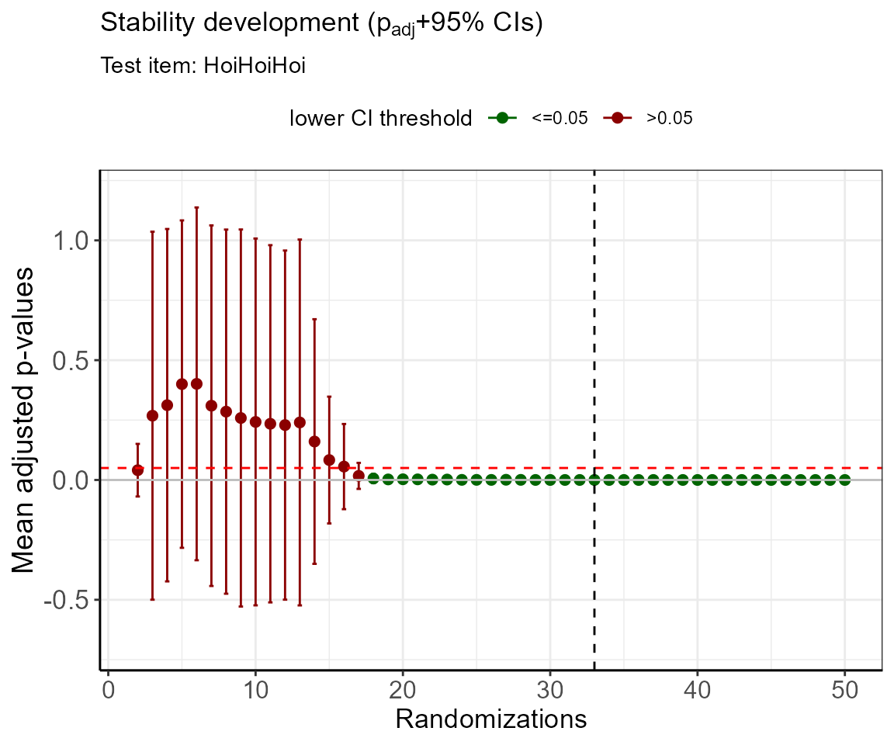

simsalRbim Examples
Steven R. Talbot
simsalRbim_examples.RmdPreference Tests
For the purpose of this Vignette, we will use the artificial ZickeZacke data. This is a ‘perfect’ set of preference tests that comes with this package, in which every subject was tested with every provided item. However, the data contain one item that was not tested with all subjects and also contains two ties (‘HoiHoiHoi’). Let’s see if we can evaluate the item’s position. For this purpose, we will employ three different strategies which are covered by the following examples.
Example 1 - The calculation of worth values
First the data are loaded. In this example the internal data are used. You can use the bimload function to import data from a variety of formats.
Next, an item that shall be tested is required (simOpt) and a Ground Truth (GT) of items that it is tested with. These entries depend on the data structure. Any items that are not listed here, will not be used in the analyis. This may lead to incomplete conclusions. So be careful what you put in here…
These information are then put into the bimpre function which does some pre-processing. Also, ties are identified. As you can see from the example below, the ties were marked in the ‘tie’ column.
dat <- ZickeZacke
simOpt <- "HoiHoiHoi"
GT <- c("Zicke", "Zacke", "Huehner", "Kacke" )
predat <- bimpre(dat=dat, GT=GT, simOpt=simOpt)
#> simsalRbim: ties were marked.In the next step, we will calculate the worth values of the item. This uses a non-linear GNM model to model the data and transforms the estimates into worth values. In the showPlot object, you can choose between the worth values or the model coefficients (“coef”).
Note, that when randOP is set to TRUE, the attribution of ties in terms of the dependent results variable in the GNM model will be random. Each time this function is executed, the worth values will change. This is an integral part of this package and will be used in the simulations later.
worth <- bimworth(ydata = predat,
GT = GT,
simOpt = simOpt,
randOP = FALSE,
showPlot = "worth")
As you can see, the item “HoiHoiHoi” appears to be marginally better than “Zacke”. But what can we actually say about the general data quality of this plot? Maybe only a fraction of individuals were tested, or just some items and not all of them. When data are large this becomes difficult to evaluate.
Therefore, we will use the bimeval function to evaluate the data together with the worth values. The results will be visualized as a bubble plot.
Also, with these data, there will be two warnings. This is intentional.
w_errors <- bimeval(ydata = predat,
worth = worth,
GT = GT,
simOpt = simOpt,
showPlot = TRUE)
#> Warning in bimeval(ydata = predat, worth = worth, GT = GT, simOpt = simOpt, : simsalRbim: No. of SUBJECTS WARNING!
#> The number of subjects you have provided for testing the simOpt='HoiHoiHoi' item is probably insufficient!
#> Try increasing the number of subjects.
#> You are currently below 80% data coverage for that item.
#> Your provided-to-simulated subjects ratio is at: 50%.
#> Warning in bimeval(ydata = predat, worth = worth, GT = GT, simOpt = simOpt, : simsalRbim: No. of ITEMS WARNING!
#> The number of item tests you have provided for testing the simOpt='HoiHoiHoi' item is probably insufficient!
#> Try increasing the number of item combinations.
#> You are currently below 80% item coverage for that item.
#> Your provided-to-simulated items ratio is at: 40%.
The warnings indicate that the number of subjects tested maybe too low. The second warning shows the same for the number of items tested. In order to get more reliable results, both should be increased.
The bubbleplot shows the consensus error of each item. This means, the smaller the bubble (or error), the more agreement there is between subjects regarding the positioning of the respective item. With this tool we can assume that the position of ‘Zicke’ at zero % error is secure. There was full agreement of all subjects on the positioning of that item. However, ‘HoiHoiHoi’ shows 25% disagreement. Take this together with the warnings from above, the positioning of this item is relatively insecure. It might be in position 2 or 3…
Example 2 - uninformed item position simulation
From the example above we know that for the inclusion of ties, the results of the preference test can be randomized. In the GNM it does not matter whether the test was binary or continuous. The preprocessing took care of that. However, for a certain amount of combinations, this leaves a number of degrees of freedom that can be modeled in the GNM. This logic is used in the bimUninformed function to simulate an **uninformed*’** worth calculation for optimal item positioning.
This procedure is called ‘uninformed’ because it uses no a priori knowledge about the transitivity of items. It is assumed that all choices in the preference test were correct.
For any number of randomization steps, an ANOVA with a MCP correction is used to compare the worth values. As long as they are not significantly different, the items’ position can be challenged. At a limited number of degrees of freedom this will eventually lead into a saturation of the mean adjusted p-value. Starting at relatively large confidence levels, the errors will become smaller and once the p-value hits zero, the cutoff is found. For ambiguous data this can mean a lot of required randomizations. This is a heuristic! So, be prepared to try this out manually for your data.
# We will run 100 randomizations in this example to find the optimal cutoff
cutoff <- bimUninformed(ydata = predat,
GT = GT,
simOpt = simOpt,
limitToRun = 100,
ylim = c(-1,2) )
cutoff$cutoff
#> [1] 65The simulation shows that the optimal cutoff for the data is at 65 randomizations.
This result can be displayed with 95% confidence intervals using the bimpos function. Here, we will insert the number of required randomizations.
pos <- bimpos(ydata = predat,
GT = GT,
simOpt = simOpt,
limitToRun = cutoff$cutoff, # 65
showPlot = TRUE )
| item | Mean.W | SD.W | n.W | se.W | lower.ci.W | upper.ci.W | pos |
|---|---|---|---|---|---|---|---|
| Zicke | 0.6053021 | 0.0896190 | 65 | 0.0111159 | 0.5830956 | 0.6275086 | 1 |
| HoiHoiHoi | 0.1871260 | 0.0811795 | 65 | 0.0100691 | 0.1670107 | 0.2072413 | 2 |
| Zacke | 0.1406748 | 0.0146409 | 65 | 0.0018160 | 0.1370469 | 0.1443026 | 3 |
| Huehner | 0.0523842 | 0.0172419 | 65 | 0.0021386 | 0.0481119 | 0.0566565 | 4 |
| Kacke | 0.0145130 | 0.0019947 | 65 | 0.0002474 | 0.0140187 | 0.0150073 | 5 |
The table shows the estimated mean worth values with errors. All values are sorted in the correct order. The items’ positions are now clear as there are no overlapping confidence intervals.
From the evaluation above our confidence in the positioning of ‘HoiHoiHoi’ was low. Now we can be rather sure that it is in position 2. If in doubt, increase the number of randomizations until the items are separated.
Example 3 - informed item position simulation
In the last example, we will perform an informed simulation of the data. By calculating the intransitivity of the item combinations, we can estimate which choices were wrong and include this in our evaluation. We will use a frequency distribution to finally decide on the tested item’s position.
frqnc <- bimsim(ydata = predat,
GT = GT,
simOpt = simOpt,
limitToRun = 78,
fval = 1,
showPlot = TRUE,
ylim = c(0,0.7))
| Var1 | Freq |
|---|---|
| 2 | 0.7051 |
| 3 | 0.2692 |
| 4 | 0.0256 |
The table shows, that the items with a low intransitivity ratio (Iratio) are mostly in position 2. Therefore, for the ‘HoiHoiHoi’ item, we can opt for position 2.